Episode 138: - Where Have All the PKs Gone? Ever since Britannia split into Trammel and Felucca I have been reading on the boards about how deserted Felucca is, how all the PKs have nothing to do now that everyone is playing in Trammel, etc. and it got me to thinking about what all the PKs are doing now that there are no easy kills left, so I decided to send ImaNewbie over to Felucca to investigate. What he found was amazing, but don't take my word for it, check it out for yourself. As this episode opens ImaNewbie is in the tavern complaining to ImaDufus about how he needs some excitement in his life.
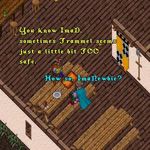
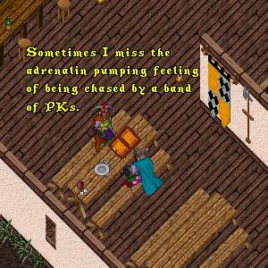
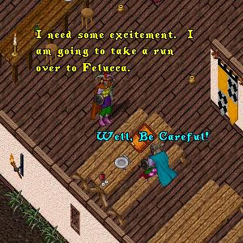
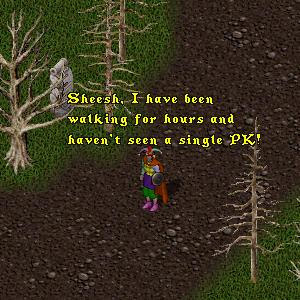
Hrmmm... Maybe the rumors are true. Maybe all
the PKs have disappeared. But wait! Here comes
one of those familiar deathrobe and skull mask
wearing, halberd packing types now.
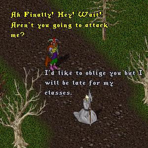
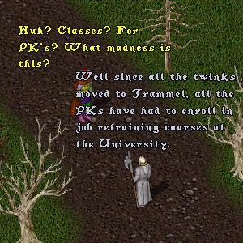
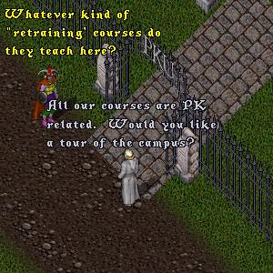
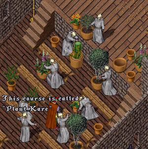
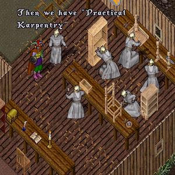
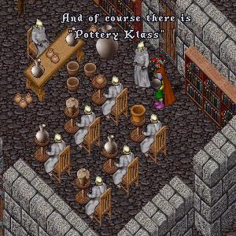
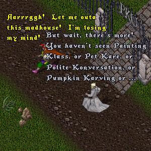
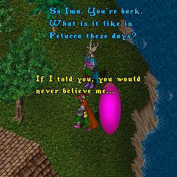
So all you twinks that are reading this, give the poor PKs a break. Head over to Felucca once in awhile and offer yourselves up as a target. If we don't act soon they will be selling PKs as rares on Ebay.